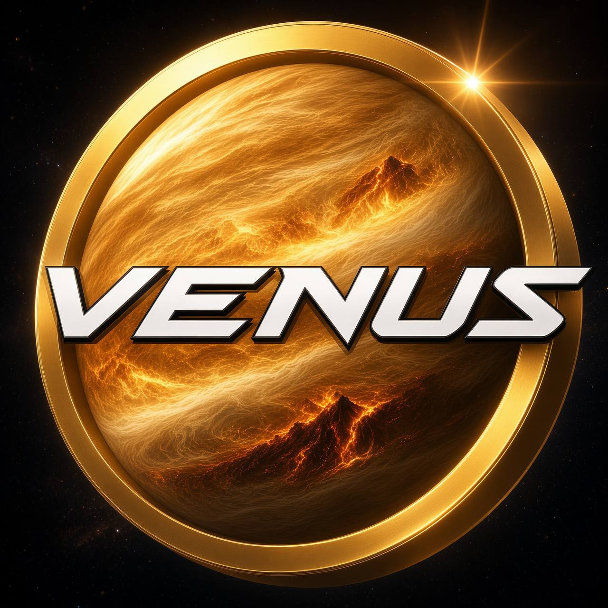

This site is procedural — the terrain, the planet cutaway, the cloud deck and the phase complication are all computed in the browser. It needs JavaScript enabled.
Venus · 6,051.8 km radius · 462 °C · 92 bar · 243-day retrograde day.